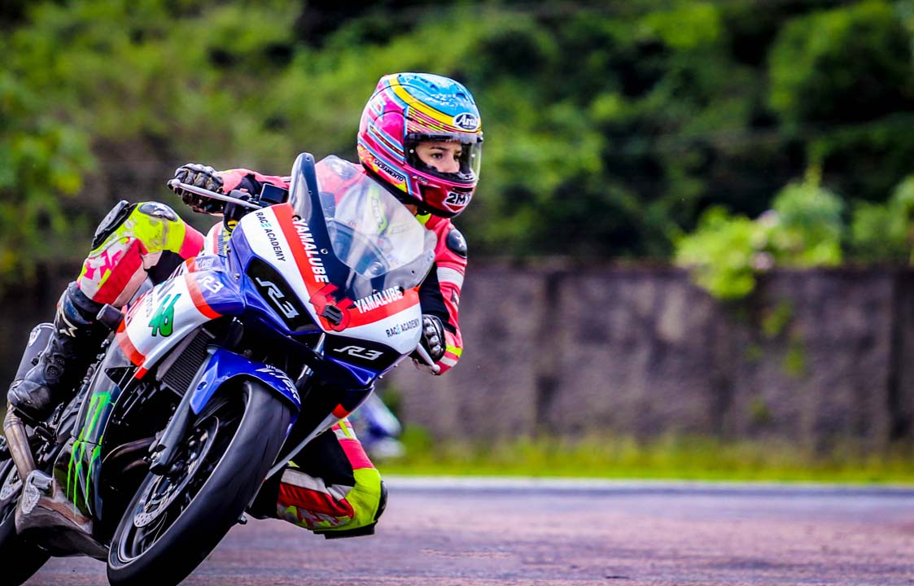

Sara Conessa
piloto da R3, Sarah Conessa

Biografia da Sarah Conessa
Sarah Conessa é piloto desde os 13 anos de idade. Ela começou sem muitas pretensões, sem imaginar que o motociclismo tomaria um espaço tão grande em sua vida. Hoje, com 20 anos, faz Ciências Biológicas na Universidade Católica de Brasília (UCB), cidade onde sempre morou e onde começou a se encantar pelas motos.Linha do tempo
2014 No meu aniversário de 14 anos, o pai dela deu uma moto Ninja 300 e em 2014 eu já comecei a correr de Ninja,
aqui em Brasília. Isso só o pai dela, sem equipe.
2016 Em 2016, eu fazia o campeonato brasileiro, fazia o campeonato regional de Goiânia, e fazia o campeonato espanhol.
2018 Em 2018, eu comecei a faculdade.
2019 Em 2019, participou do ITALIKA Women’s International Cup, no México.
2020 Agora, 2020, ela parou de fazer as viajens porque da faculdade.
Se quiser saber mais sobre a Sarah Conessa, Clique Aqui
Fontes utilizadas na página: Timetoast e eBiografia